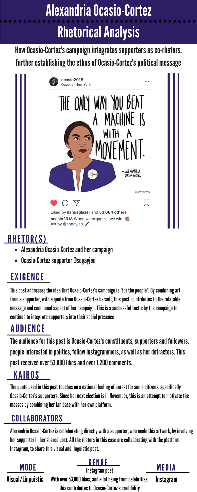
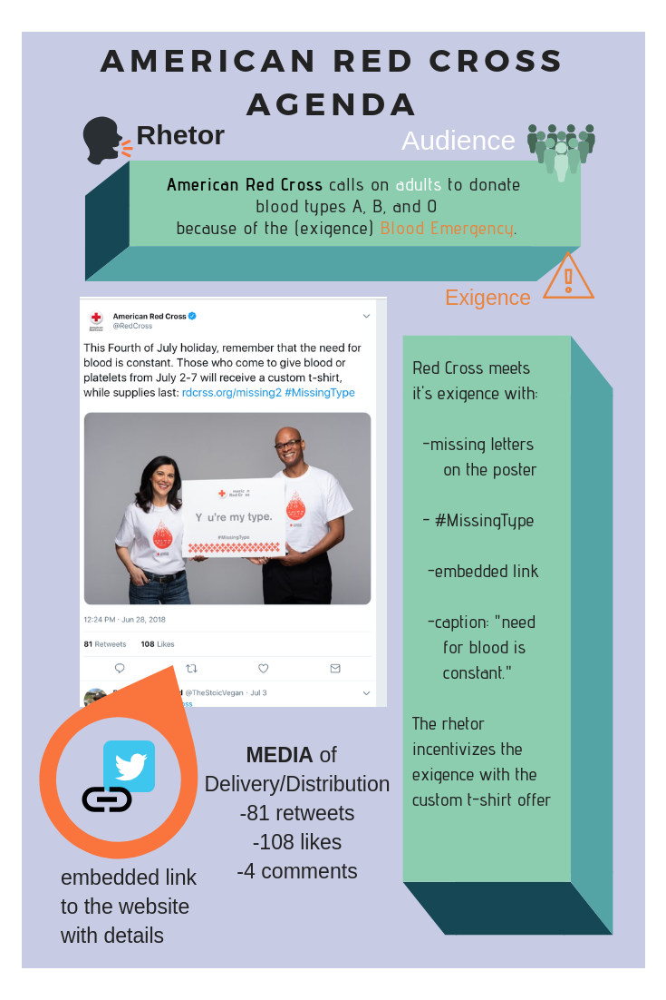
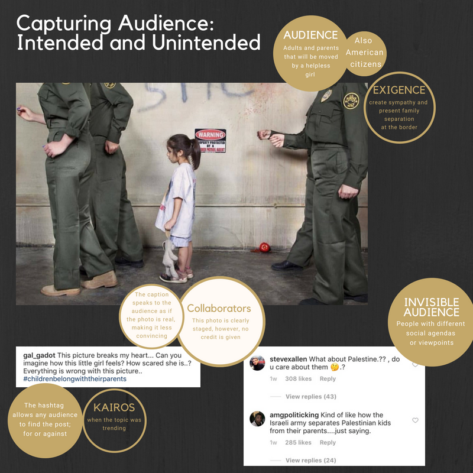

Dr. Christopher Andrews
Selected Infographics for rhetorical analysis project. ENGL 4320: Writing for Social Media (Summer 2018)
Chelsea Lanzener, Alexandria Ocasio-Cortez.

Theresa Gayle, The American Red Cross.

Madeline Moore, Capturing Audience: Intended and unintended.
